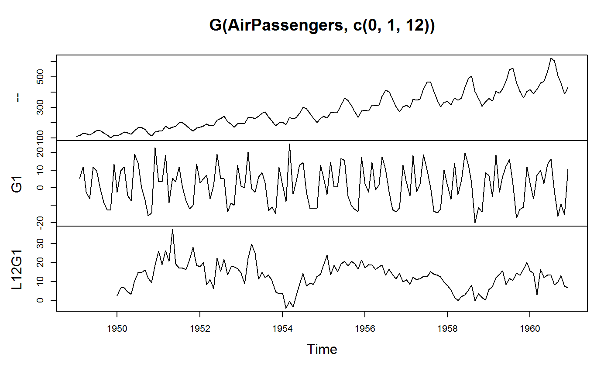
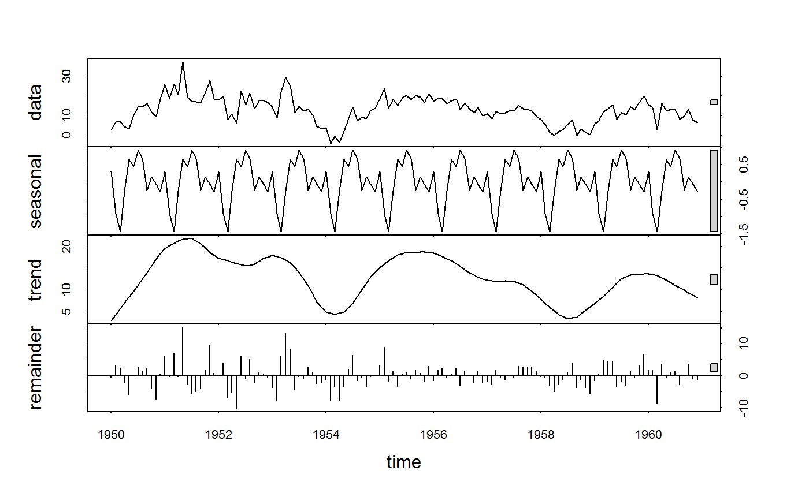

fgrowth.Rdfgrowth is a S3 generic to compute (sequences of) suitably lagged / leaded and iterated growth rates, obtained with via the exact method of computation of through log differencing. By default growth rates are provided in percentage terms, but any scale factor can be applied. The growth operator G is a parsimonious wrapper around fgrowth, and also provides more flexibility when applied to data frames.
fgrowth(x, n = 1, diff = 1, ...) G(x, n = 1, diff = 1, ...) # S3 method for default fgrowth(x, n = 1, diff = 1, g = NULL, t = NULL, fill = NA, logdiff = FALSE, scale = 100, power = 1, stubs = TRUE, ...) # S3 method for default G(x, n = 1, diff = 1, g = NULL, t = NULL, fill = NA, logdiff = FALSE, scale = 100, power = 1, stubs = TRUE, ...) # S3 method for matrix fgrowth(x, n = 1, diff = 1, g = NULL, t = NULL, fill = NA, logdiff = FALSE, scale = 100, power = 1, stubs = length(n) + length(diff) > 2L, ...) # S3 method for matrix G(x, n = 1, diff = 1, g = NULL, t = NULL, fill = NA, logdiff = FALSE, scale = 100, power = 1, stubs = TRUE, ...) # S3 method for data.frame fgrowth(x, n = 1, diff = 1, g = NULL, t = NULL, fill = NA, logdiff = FALSE, scale = 100, power = 1, stubs = length(n) + length(diff) > 2L, ...) # S3 method for data.frame G(x, n = 1, diff = 1, by = NULL, t = NULL, cols = is.numeric, fill = NA, logdiff = FALSE, scale = 100, power = 1, stubs = TRUE, keep.ids = TRUE, ...) # Methods for compatibility with plm: # S3 method for pseries fgrowth(x, n = 1, diff = 1, fill = NA, logdiff = FALSE, scale = 100, power = 1, stubs = TRUE, ...) # S3 method for pseries G(x, n = 1, diff = 1, fill = NA, logdiff = FALSE, scale = 100, power = 1, stubs = TRUE, ...) # S3 method for pdata.frame fgrowth(x, n = 1, diff = 1, fill = NA, logdiff = FALSE, scale = 100, power = 1, stubs = length(n) + length(diff) > 2L, ...) # S3 method for pdata.frame G(x, n = 1, diff = 1, cols = is.numeric, fill = NA, logdiff = FALSE, scale = 100, power = 1, stubs = TRUE, keep.ids = TRUE, ...) # Methods for grouped data frame / compatibility with dplyr: # S3 method for grouped_df fgrowth(x, n = 1, diff = 1, t = NULL, fill = NA, logdiff = FALSE, scale = 100, power = 1, stubs = length(n) + length(diff) > 2L, keep.ids = TRUE, ...) # S3 method for grouped_df G(x, n = 1, diff = 1, t = NULL, fill = NA, logdiff = FALSE, scale = 100, power = 1, stubs = TRUE, keep.ids = TRUE, ...)
| x | a numeric vector, matrix, data frame, panel series ( |
|---|---|
| n | integer. A vector indicating the number of lags or leads. |
| diff | integer. A vector of integers > 1 indicating the order of taking growth rates, e.g. |
| g | a factor, |
| by | data.frame method: Same as |
| t | same input as |
| cols | data.frame method: Select columns to compute growth rates using a function, column names, indices or a logical vector. Default: All numeric variables. Note: |
| fill | value to insert when vectors are shifted. Default is |
| logdiff | logical. Compute log-difference growth rates instead of exact growth rates. See Details. |
| scale | logical. Scale factor post-applied to growth rates, default is 100 which gives growth rates in percentage terms. See Details. |
| power | numeric. Apply a power to annualize or compound growth rates e.g. |
| stubs | logical. |
| keep.ids | data.frame / pdata.frame / grouped_df methods: Logical. Drop all panel-identifiers from the output (which includes all variables passed to |
| ... | arguments to be passed to or from other methods. |
fgrowth/G by default computes exact growth rates using repeat(diff) ((x[i]/x[i-n])^power - 1)*scale, and, if logdiff = TRUE approximate growth rates using repeat(diff) log(x[i]/x[i-n])*scale. So for diff > 1 it computes growth rate of growth rates etc.. For further details see the help pages for fdiff and flag.
x where the growth rate was taken diff times using lags n of itself, scaled by scale. Computations can be grouped by g/by and/or ordered by t. See Details and Examples.
## Simple Time Series: AirPassengers G(AirPassengers) # Growth rate, same as fgrowth(AirPassengers)#> Jan Feb Mar Apr May Jun #> 1949 NA 5.3571429 11.8644068 -2.2727273 -6.2015504 11.5702479 #> 1950 -2.5423729 9.5652174 11.9047619 -4.2553191 -7.4074074 19.2000000 #> 1951 3.5714286 3.4482759 18.6666667 -8.4269663 5.5214724 3.4883721 #> 1952 3.0120482 5.2631579 7.2222222 -6.2176166 1.1049724 19.1256831 #> 1953 1.0309278 0.0000000 20.4081633 -0.4237288 -2.5531915 6.1135371 #> 1954 1.4925373 -7.8431373 25.0000000 -3.4042553 3.0837004 12.8205128 #> 1955 5.6768559 -3.7190083 14.5922747 0.7490637 0.3717472 16.6666667 #> 1956 2.1582734 -2.4647887 14.4404332 -1.2618297 1.5974441 17.6100629 #> 1957 2.9411765 -4.4444444 18.2724252 -2.2471910 2.0114943 18.8732394 #> 1958 1.1904762 -6.4705882 13.8364780 -3.8674033 4.3103448 19.8347107 #> 1959 6.8249258 -5.0000000 18.7134503 -2.4630542 6.0606061 12.3809524 #> 1960 2.9629630 -6.2350120 7.1611253 10.0238663 2.3861171 13.3474576 #> Jul Aug Sep Oct Nov Dec #> 1949 9.6296296 0.0000000 -8.1081081 -12.5000000 -12.6050420 13.4615385 #> 1950 14.0939597 0.0000000 -7.0588235 -15.8227848 -14.2857143 22.8070175 #> 1951 11.7977528 0.0000000 -7.5376884 -11.9565217 -9.8765432 13.6986301 #> 1952 5.5045872 5.2173913 -13.6363636 -8.6124402 -9.9476440 12.7906977 #> 1953 8.6419753 3.0303030 -12.8676471 -10.9704641 -14.6919431 11.6666667 #> 1954 14.3939394 -2.9801325 -11.6040956 -11.5830116 -11.3537118 12.8078818 #> 1955 15.5555556 -4.6703297 -10.0864553 -12.1794872 -13.5036496 17.2995781 #> 1956 10.4278075 -1.9370460 -12.3456790 -13.8028169 -11.4379085 12.9151292 #> 1957 10.1895735 0.4301075 -13.4903640 -14.1089109 -12.1037464 10.1639344 #> 1958 12.8735632 2.8513238 -20.0000000 -11.1386139 -13.6490251 8.7096774 #> 1959 16.1016949 2.0072993 -17.1735242 -12.0950324 -11.0565111 11.8784530 #> 1960 16.2616822 -2.5723473 -16.1716172 -9.2519685 -15.4013015 10.7692308G(AirPassengers, logdiff = TRUE) # Log-difference#> Jan Feb Mar Apr May Jun #> 1949 NA 5.2185753 11.2117298 -2.2989518 -6.4021859 10.9484233 #> 1950 -2.5752496 9.1349779 11.2477983 -4.3485112 -7.6961041 17.5632569 #> 1951 3.5091320 3.3901552 17.1148256 -8.8033349 5.3744276 3.4289073 #> 1952 2.9675768 5.1293294 6.9733338 -6.4193158 1.0989122 17.5008910 #> 1953 1.0256500 0.0000000 18.5717146 -0.4246291 -2.5863511 5.9339440 #> 1954 1.4815086 -8.1678031 22.3143551 -3.4635497 3.0371098 12.0627988 #> 1955 5.5215723 -3.7899273 13.6210205 0.7462721 0.3710579 15.4150680 #> 1956 2.1353124 -2.4956732 13.4884268 -1.2698583 1.5848192 16.2204415 #> 1957 2.8987537 -4.5462374 16.7820466 -2.2728251 1.9915310 17.2887525 #> 1958 1.1834458 -6.6894235 12.9592829 -3.9441732 4.2200354 18.0943197 #> 1959 6.6021101 -5.1293294 17.1542423 -2.4938948 5.8840500 11.6724274 #> 1960 2.9199155 -6.4378662 6.9163360 9.5527123 2.3580943 12.5287761 #> Jul Aug Sep Oct Nov Dec #> 1949 9.1937495 0.0000000 -8.4557388 -13.3531393 -13.4732594 12.6293725 #> 1950 13.1852131 0.0000000 -7.3203404 -17.2245905 -15.4150680 20.5443974 #> 1951 11.1521274 0.0000000 -7.8369067 -12.7339422 -10.3989714 12.8381167 #> 1952 5.3584246 5.0858417 -14.6603474 -9.0060824 -10.4778951 12.0363682 #> 1953 8.2887660 2.9852963 -13.7741925 -11.6202008 -15.8901283 11.0348057 #> 1954 13.4477914 -3.0254408 -12.3344547 -12.3106058 -12.0516025 12.0516025 #> 1955 14.4581229 -4.7829088 -10.6321592 -12.9875081 -14.5067965 15.9560973 #> 1956 9.9191796 -1.9560526 -13.1769278 -14.8532688 -12.1466281 12.1466281 #> 1957 9.7032092 0.4291852 -14.4914380 -15.2090098 -12.9013003 9.6799383 #> 1958 12.1098097 2.8114301 -22.3143551 -11.8092489 -14.6750091 8.3510633 #> 1959 14.9296301 1.9874186 -18.8422419 -12.8913869 -11.7168974 11.2242855 #> 1960 15.0673346 -2.6060107 -17.6398538 -9.7083405 -16.7251304 10.2278849G(AirPassengers, 1, 2) # Growth rate of growth rate#> Jan Feb Mar Apr May #> 1949 NA NA 121.4689266 -119.1558442 172.8682171 #> 1950 -118.8861985 -476.2318841 24.4588745 -135.7446809 74.0740741 #> 1951 -84.3406593 -3.4482759 441.3333333 -145.1444623 -165.5214724 #> 1952 -78.0120482 74.7368421 37.2222222 -186.0900757 -117.7716390 #> 1953 -91.9400187 -100.0000000 Inf -102.0762712 502.5531915 #> 1954 -87.2068230 -625.4901961 -418.7500000 -113.6170213 -190.5837004 #> 1955 -55.6768559 -165.5117610 -492.3700525 -94.8667107 -50.3717472 #> 1956 -87.5241270 -214.2018779 -685.8690046 -108.7381703 -226.5974441 #> 1957 -77.2268908 -251.1111111 -511.1295681 -112.2982635 -189.5114943 #> 1958 -88.2872504 -643.5294118 -313.8364780 -127.9507785 -211.4532020 #> 1959 -21.6397406 -173.2608696 -474.2690058 -113.1619458 -346.0606061 #> 1960 -75.0559862 -310.4316547 -214.8534330 39.9761337 -76.1956409 #> Jun Jul Aug Sep Oct #> 1949 -286.5702479 -16.7724868 -100.0000000 -Inf 54.1666667 #> 1950 -359.2000000 -26.5939597 -100.0000000 -Inf 124.1561181 #> 1951 -36.8217054 238.2022472 -100.0000000 -Inf 58.6231884 #> 1952 1630.8743169 -71.2188729 -5.2173913 -361.3636364 -36.8421053 #> 1953 -339.4468705 41.3580247 -64.9350649 -524.6323529 -14.7438216 #> 1954 315.7509158 12.2727273 -120.7040781 289.3818733 -0.1816943 #> 1955 4383.3333333 -6.6666667 -130.0235479 115.9688083 20.7509158 #> 1956 1002.3899371 -40.7849503 -118.5757745 537.3456790 11.8028169 #> 1957 838.2696177 -46.0104690 -95.7789447 -3236.5096360 4.5851014 #> 1958 360.1652893 -35.0957854 -77.8513238 -801.4285714 -44.3069307 #> 1959 104.2857143 30.0521512 -87.5336151 -955.5537486 -29.5716343 #> 1960 459.3798151 21.8335559 -115.8184573 528.6716172 -42.7888478 #> Nov Dec #> 1949 0.8403361 -206.7948718 #> 1950 -9.7142857 -259.6491228 #> 1951 -17.3961841 -238.6986301 #> 1952 15.5031995 -228.5801714 #> 1953 33.9227124 -179.4086022 #> 1954 -1.9796215 -212.8078818 #> 1955 10.8720707 -228.1103889 #> 1956 -17.1335201 -212.9151292 #> 1957 -14.2120431 -183.9734582 #> 1958 22.5379140 -163.8117182 #> 1959 -8.5863461 -207.4340086 #> 1960 66.4651313 -169.9241603G(AirPassengers, 12) # Seasonal growth rate (data is monthly)#> Jan Feb Mar Apr May Jun #> 1949 NA NA NA NA NA NA #> 1950 2.6785714 6.7796610 6.8181818 4.6511628 3.3057851 10.3703704 #> 1951 26.0869565 19.0476190 26.2411348 20.7407407 37.6000000 19.4630872 #> 1952 17.9310345 20.0000000 8.4269663 11.0429448 6.3953488 22.4719101 #> 1953 14.6198830 8.8888889 22.2797927 29.8342541 25.1366120 11.4678899 #> 1954 4.0816327 -4.0816327 -0.4237288 -3.4042553 2.1834061 8.6419753 #> 1955 18.6274510 23.9361702 13.6170213 18.5022026 15.3846154 19.3181818 #> 1956 17.3553719 18.8841202 18.7265918 16.3568773 17.7777778 18.7301587 #> 1957 10.9154930 8.6642599 12.3028391 11.1821086 11.6352201 12.8342246 #> 1958 7.9365079 5.6478405 1.6853933 0.0000000 2.2535211 3.0805687 #> 1959 5.8823529 7.5471698 12.1546961 13.7931034 15.7024793 8.5057471 #> 1960 15.8333333 14.3274854 3.2019704 16.4141414 12.3809524 13.3474576 #> Jul Aug Sep Oct Nov Dec #> 1949 NA NA NA NA NA NA #> 1950 14.8648649 14.8648649 16.1764706 11.7647059 9.6153846 18.6440678 #> 1951 17.0588235 17.0588235 16.4556962 21.8045113 28.0701754 18.5714286 #> 1952 15.5778894 21.6080402 13.5869565 17.9012346 17.8082192 16.8674699 #> 1953 14.7826087 12.3966942 13.3971292 10.4712042 4.6511628 3.6082474 #> 1954 14.3939394 7.7205882 9.2827004 8.5308057 12.7777778 13.9303483 #> 1955 20.5298013 18.4300341 20.4633205 19.6506550 16.7487685 21.3973799 #> 1956 13.4615385 16.7146974 13.7820513 11.6788321 14.3459916 10.0719424 #> 1957 12.5907990 15.3086420 13.8028169 13.3986928 12.5461255 9.8039216 #> 1958 5.5913978 8.1370450 0.0000000 3.4582133 1.6393443 0.2976190 #> 1959 11.6089613 10.6930693 14.6039604 13.3704735 16.7741935 20.1780415 #> 1960 13.5036496 8.4078712 9.7192225 13.2678133 7.7348066 6.6666667#> F2G1 F2G2 F2G3 FG1 FG2 FG3 -- #> [1,] -15.151515 -266.66667 77.97753 -5.084746 -52.05811 -90.63805 112 #> [2,] -8.527132 91.86047 -285.94592 -10.606061 -556.06061 757.77959 118 #> [3,] 9.090909 -149.83165 -51.15620 2.325581 -64.82558 -60.41293 132 #> [4,] -4.444444 -49.40171 -63.68691 6.611570 -163.75443 -1006.58997 129 #> [5,] -18.243243 -306.75676 330.09195 -10.370370 18.06268 NaN 121 #> [6,] -8.783784 -136.04380 -104.90137 -8.783784 -Inf Inf 135 #> G1 G2 G3 L2G1 L2G2 L2G3 #> [1,] NA NA NA NA NA NA #> [2,] 5.357143 NA NA NA NA NA #> [3,] 11.864407 121.4689 NA 17.857143 NA NA #> [4,] -2.272727 -119.1558 -198.0957 9.322034 NA NA #> [5,] -6.201550 172.8682 -245.0774 -8.333333 -146.66667 NA #> [6,] 11.570248 -286.5702 -265.7738 4.651163 -50.10571 NAplot(stl(window(G(AirPassengers, 12), # Taking seasonal growth rate removes most seasonal variation 1950), "periodic"))## Time Series Matrix of 4 EU Stock Market Indicators, recorded 260 days per year plot(G(EuStockMarkets,c(0,260))) # Plot series and annual growth rates#> #> Call: #> lm(formula = L260G1.DAX ~ ., data = G(EuStockMarkets, 260)) #> #> Residuals: #> Min 1Q Median 3Q Max #> -19.5094 -4.7763 0.4586 5.0337 18.2316 #> #> Coefficients: #> Estimate Std. Error t value Pr(>|t|) #> (Intercept) 4.48795 0.38357 11.70 < 2e-16 *** #> L260G1.SMI 0.37048 0.02635 14.06 < 2e-16 *** #> L260G1.CAC 0.82319 0.02092 39.34 < 2e-16 *** #> L260G1.FTSE -0.25008 0.03883 -6.44 1.58e-10 *** #> --- #> Signif. codes: 0 ‘***’ 0.001 ‘**’ 0.01 ‘*’ 0.05 ‘.’ 0.1 ‘ ’ 1 #> #> Residual standard error: 7.817 on 1596 degrees of freedom #> (260 observations deleted due to missingness) #> Multiple R-squared: 0.8585, Adjusted R-squared: 0.8582 #> F-statistic: 3226 on 3 and 1596 DF, p-value: < 2.2e-16 #># growth rates of the other indicators ## World Development Panel Data head(fgrowth(num_vars(wlddev), 1, 1, # Computes growth rates of numeric variables wlddev$country, wlddev$year)) # fgrowth requires external inputs..#> year decade PCGDP LIFEEX GINI ODA #> 1 NA NA NA NA NA NA #> 2 0.05102041 0 NA 1.393534 NA 103.90598 #> 3 0.05099439 0 NA 1.353002 NA -50.76923 #> 4 0.05096840 0 NA 1.322887 NA 105.82347 #> 5 0.05094244 0 NA 1.296693 NA 27.92557 #> 6 0.05091650 0 NA 1.277158 NA 22.40479#> country year G1.decade G1.PCGDP G1.LIFEEX G1.GINI G1.ODA #> 1 Afghanistan 1960 NA NA NA NA NA #> 2 Afghanistan 1961 0 NA 1.393534 NA 103.90598 #> 3 Afghanistan 1962 0 NA 1.353002 NA -50.76923 #> 4 Afghanistan 1963 0 NA 1.322887 NA 105.82347 #> 5 Afghanistan 1964 0 NA 1.296693 NA 27.92557 #> 6 Afghanistan 1965 0 NA 1.277158 NA 22.40479#>#> country G1.year G1.decade G1.PCGDP G1.LIFEEX G1.GINI G1.ODA #> 1 Afghanistan NA NA NA NA NA NA #> 2 Afghanistan 0.05102041 0 NA 1.393534 NA 103.90598 #> 3 Afghanistan 0.05099439 0 NA 1.353002 NA -50.76923 #> 4 Afghanistan 0.05096840 0 NA 1.322887 NA 105.82347 #> 5 Afghanistan 0.05094244 0 NA 1.296693 NA 27.92557 #> 6 Afghanistan 0.05091650 0 NA 1.277158 NA 22.40479#> country year G1.PCGDP G1.LIFEEX #> 1 Afghanistan 1960 NA NA #> 2 Afghanistan 1961 NA 1.393534 #> 3 Afghanistan 1962 NA 1.353002 #> 4 Afghanistan 1963 NA 1.322887 #> 5 Afghanistan 1964 NA 1.296693 #> 6 Afghanistan 1965 NA 1.277158#> country year PCGDP G1.PCGDP LIFEEX G1.LIFEEX #> 1 Afghanistan 1960 NA NA 32.292 NA #> 2 Afghanistan 1961 NA NA 32.742 1.393534 #> 3 Afghanistan 1962 NA NA 33.185 1.353002 #> 4 Afghanistan 1963 NA NA 33.624 1.322887 #> 5 Afghanistan 1964 NA NA 34.060 1.296693 #> 6 Afghanistan 1965 NA NA 34.495 1.277158#> PCGDP G1.PCGDP LIFEEX G1.LIFEEX #> 1 NA NA 32.292 NA #> 2 NA NA 32.742 1.393534 #> 3 NA NA 33.185 1.353002 #> 4 NA NA 33.624 1.322887 #> 5 NA NA 34.060 1.296693 #> 6 NA NA 34.495 1.277158# Dynamic Panel Data Models: summary(lm(G(PCGDP,1,1,iso3c,year) ~ # GDP growth regressed on it's lagged level L(PCGDP,1,iso3c,year) + # and the growth rate of Life Expanctancy G(LIFEEX,1,1,iso3c,year), data = wlddev))#> #> Call: #> lm(formula = G(PCGDP, 1, 1, iso3c, year) ~ L(PCGDP, 1, iso3c, #> year) + G(LIFEEX, 1, 1, iso3c, year), data = wlddev) #> #> Residuals: #> Min 1Q Median 3Q Max #> -67.426 -2.341 0.158 2.505 138.053 #> #> Coefficients: #> Estimate Std. Error t value Pr(>|t|) #> (Intercept) 1.967e+00 1.016e-01 19.354 < 2e-16 *** #> L(PCGDP, 1, iso3c, year) -1.398e-05 4.545e-06 -3.076 0.0021 ** #> G(LIFEEX, 1, 1, iso3c, year) 5.567e-01 9.659e-02 5.764 8.51e-09 *** #> --- #> Signif. codes: 0 ‘***’ 0.001 ‘**’ 0.01 ‘*’ 0.05 ‘.’ 0.1 ‘ ’ 1 #> #> Residual standard error: 6.213 on 8181 degrees of freedom #> (4560 observations deleted due to missingness) #> Multiple R-squared: 0.006138, Adjusted R-squared: 0.005895 #> F-statistic: 25.26 on 2 and 8181 DF, p-value: 1.155e-11 #>g = qF(wlddev$country) # Omitting t and precomputing g allows for a summary(lm(G(PCGDP,1,1,g) ~ L(PCGDP,1,g) + # bit more parsimonious specification G(LIFEEX,1,1,g), wlddev))#>#>#>#> #> Call: #> lm(formula = G(PCGDP, 1, 1, g) ~ L(PCGDP, 1, g) + G(LIFEEX, 1, #> 1, g), data = wlddev) #> #> Residuals: #> Min 1Q Median 3Q Max #> -67.426 -2.341 0.158 2.505 138.053 #> #> Coefficients: #> Estimate Std. Error t value Pr(>|t|) #> (Intercept) 1.967e+00 1.016e-01 19.354 < 2e-16 *** #> L(PCGDP, 1, g) -1.398e-05 4.545e-06 -3.076 0.0021 ** #> G(LIFEEX, 1, 1, g) 5.567e-01 9.659e-02 5.764 8.51e-09 *** #> --- #> Signif. codes: 0 ‘***’ 0.001 ‘**’ 0.01 ‘*’ 0.05 ‘.’ 0.1 ‘ ’ 1 #> #> Residual standard error: 6.213 on 8181 degrees of freedom #> (4560 observations deleted due to missingness) #> Multiple R-squared: 0.006138, Adjusted R-squared: 0.005895 #> F-statistic: 25.26 on 2 and 8181 DF, p-value: 1.155e-11 #>summary(lm(G1.PCGDP ~., # Now adding level and lagged level of L(G(wlddev,0:1,1, ~ country, ~year,9:10),0:1, # LIFEEX and lagged growth rates ~ country, ~year, keep.ids = FALSE)[-1]))#> #> Call: #> lm(formula = G1.PCGDP ~ ., data = L(G(wlddev, 0:1, 1, ~country, #> ~year, 9:10), 0:1, ~country, ~year, keep.ids = FALSE)[-1]) #> #> Residuals: #> Min 1Q Median 3Q Max #> -82.442 -2.134 0.139 2.136 138.642 #> #> Coefficients: #> Estimate Std. Error t value Pr(>|t|) #> (Intercept) -2.573e+00 5.144e-01 -5.001 5.82e-07 *** #> L1.PCGDP -3.779e-05 5.258e-06 -7.189 7.14e-13 *** #> L1.G1.PCGDP 2.793e-01 1.055e-02 26.478 < 2e-16 *** #> LIFEEX 9.109e-01 7.847e-01 1.161 0.24575 #> L1.LIFEEX -8.481e-01 7.880e-01 -1.076 0.28187 #> G1.LIFEEX -3.434e-01 4.840e-01 -0.709 0.47805 #> L1.G1.LIFEEX 6.101e-01 1.904e-01 3.204 0.00136 ** #> --- #> Signif. codes: 0 ‘***’ 0.001 ‘**’ 0.01 ‘*’ 0.05 ‘.’ 0.1 ‘ ’ 1 #> #> Residual standard error: 5.866 on 7987 degrees of freedom #> (4750 observations deleted due to missingness) #> Multiple R-squared: 0.103, Adjusted R-squared: 0.1023 #> F-statistic: 152.8 on 6 and 7987 DF, p-value: < 2.2e-16 #>## Using plm can make things easier, but avoid attaching or 'with' calls: pwlddev <- plm::pdata.frame(wlddev, index = c("country","year")) head(G(pwlddev, 0:1, 1, 9:10)) # Again growth rates of LIFEEX and PCGDP#> country year PCGDP G1.PCGDP LIFEEX G1.LIFEEX #> Afghanistan-1960 Afghanistan 1960 NA NA 32.292 NA #> Afghanistan-1961 Afghanistan 1961 NA NA 32.742 1.393534 #> Afghanistan-1962 Afghanistan 1962 NA NA 33.185 1.353002 #> Afghanistan-1963 Afghanistan 1963 NA NA 33.624 1.322887 #> Afghanistan-1964 Afghanistan 1964 NA NA 34.060 1.296693 #> Afghanistan-1965 Afghanistan 1965 NA NA 34.495 1.277158PCGDP <- pwlddev$PCGDP # A panel-Series of GDP per Capita head(G(PCGDP)) # Growth rate of the panel series#> Afghanistan-1960 Afghanistan-1961 Afghanistan-1962 Afghanistan-1963 #> NA NA NA NA #> Afghanistan-1964 Afghanistan-1965 #> NA NAsummary(lm(G1.PCGDP ~., # Running the dynamic model again -> data = L(G(pwlddev,0:1,1,9:10),0:1, # code becomes a bit simpler keep.ids = FALSE)[-1]))#> #> Call: #> lm(formula = G1.PCGDP ~ ., data = L(G(pwlddev, 0:1, 1, 9:10), #> 0:1, keep.ids = FALSE)[-1]) #> #> Residuals: #> Min 1Q Median 3Q Max #> -82.442 -2.134 0.139 2.136 138.642 #> #> Coefficients: #> Estimate Std. Error t value Pr(>|t|) #> (Intercept) -2.573e+00 5.144e-01 -5.001 5.82e-07 *** #> L1.PCGDP -3.779e-05 5.258e-06 -7.189 7.14e-13 *** #> L1.G1.PCGDP 2.793e-01 1.055e-02 26.478 < 2e-16 *** #> LIFEEX 9.109e-01 7.847e-01 1.161 0.24575 #> L1.LIFEEX -8.481e-01 7.880e-01 -1.076 0.28187 #> G1.LIFEEX -3.434e-01 4.840e-01 -0.709 0.47805 #> L1.G1.LIFEEX 6.101e-01 1.904e-01 3.204 0.00136 ** #> --- #> Signif. codes: 0 ‘***’ 0.001 ‘**’ 0.01 ‘*’ 0.05 ‘.’ 0.1 ‘ ’ 1 #> #> Residual standard error: 5.866 on 7987 degrees of freedom #> (4750 observations deleted due to missingness) #> Multiple R-squared: 0.103, Adjusted R-squared: 0.1023 #> F-statistic: 152.8 on 6 and 7987 DF, p-value: < 2.2e-16 #># One could be tempted to also do something like this, but THIS DOES NOT WORK!!: # -> a pseries is only created when subsetting the pdata.frame using $ or [[ summary(lm(G(PCGDP) ~ L(G(PCGDP,0:1)) + L(G(LIFEEX,0:1),0:1), pwlddev))#> #> Call: #> lm(formula = G(PCGDP) ~ L(G(PCGDP, 0:1)) + L(G(LIFEEX, 0:1), #> 0:1), data = pwlddev) #> #> Residuals: #> Min 1Q Median 3Q Max #> -82.442 -2.134 0.139 2.136 138.642 #> #> Coefficients: #> Estimate Std. Error t value Pr(>|t|) #> (Intercept) -2.573e+00 5.144e-01 -5.001 5.82e-07 *** #> L(G(PCGDP, 0:1))L1.-- -3.779e-05 5.258e-06 -7.189 7.14e-13 *** #> L(G(PCGDP, 0:1))L1.G1 2.793e-01 1.055e-02 26.478 < 2e-16 *** #> L(G(LIFEEX, 0:1), 0:1)-- 9.109e-01 7.847e-01 1.161 0.24575 #> L(G(LIFEEX, 0:1), 0:1)L1.-- -8.481e-01 7.880e-01 -1.076 0.28187 #> L(G(LIFEEX, 0:1), 0:1)G1 -3.434e-01 4.840e-01 -0.709 0.47805 #> L(G(LIFEEX, 0:1), 0:1)L1.G1 6.101e-01 1.904e-01 3.204 0.00136 ** #> --- #> Signif. codes: 0 ‘***’ 0.001 ‘**’ 0.01 ‘*’ 0.05 ‘.’ 0.1 ‘ ’ 1 #> #> Residual standard error: 5.866 on 7987 degrees of freedom #> (4750 observations deleted due to missingness) #> Multiple R-squared: 0.103, Adjusted R-squared: 0.1023 #> F-statistic: 152.8 on 6 and 7987 DF, p-value: < 2.2e-16 #># To make it work, one needs to create pseries LIFEEX <- pwlddev$LIFEEX summary(lm(G(PCGDP) ~ L(G(PCGDP,0:1)) + L(G(LIFEEX,0:1),0:1))) # THIS WORKS !#> #> Call: #> lm(formula = G(PCGDP) ~ L(G(PCGDP, 0:1)) + L(G(LIFEEX, 0:1), #> 0:1)) #> #> Residuals: #> Min 1Q Median 3Q Max #> -82.442 -2.134 0.139 2.136 138.642 #> #> Coefficients: #> Estimate Std. Error t value Pr(>|t|) #> (Intercept) -2.573e+00 5.144e-01 -5.001 5.82e-07 *** #> L(G(PCGDP, 0:1))L1.-- -3.779e-05 5.258e-06 -7.189 7.14e-13 *** #> L(G(PCGDP, 0:1))L1.G1 2.793e-01 1.055e-02 26.478 < 2e-16 *** #> L(G(LIFEEX, 0:1), 0:1)-- 9.109e-01 7.847e-01 1.161 0.24575 #> L(G(LIFEEX, 0:1), 0:1)L1.-- -8.481e-01 7.880e-01 -1.076 0.28187 #> L(G(LIFEEX, 0:1), 0:1)G1 -3.434e-01 4.840e-01 -0.709 0.47805 #> L(G(LIFEEX, 0:1), 0:1)L1.G1 6.101e-01 1.904e-01 3.204 0.00136 ** #> --- #> Signif. codes: 0 ‘***’ 0.001 ‘**’ 0.01 ‘*’ 0.05 ‘.’ 0.1 ‘ ’ 1 #> #> Residual standard error: 5.866 on 7987 degrees of freedom #> (4750 observations deleted due to missingness) #> Multiple R-squared: 0.103, Adjusted R-squared: 0.1023 #> F-statistic: 152.8 on 6 and 7987 DF, p-value: < 2.2e-16 #>## Using dplyr: library(dplyr) wlddev %>% group_by(country) %>% select(PCGDP,LIFEEX) %>% fgrowth(0:1) # Adding growth rates#>#>#> # A tibble: 12,744 x 5 #> # Groups: country [216] #> country PCGDP G1.PCGDP LIFEEX G1.LIFEEX #> * <chr> <dbl> <dbl> <dbl> <dbl> #> 1 Afghanistan NA NA 32.3 NA #> 2 Afghanistan NA NA 32.7 1.39 #> 3 Afghanistan NA NA 33.2 1.35 #> 4 Afghanistan NA NA 33.6 1.32 #> 5 Afghanistan NA NA 34.1 1.30 #> 6 Afghanistan NA NA 34.5 1.28 #> 7 Afghanistan NA NA 34.9 1.26 #> 8 Afghanistan NA NA 35.4 1.24 #> 9 Afghanistan NA NA 35.8 1.23 #> 10 Afghanistan NA NA 36.2 1.22 #> # ... with 12,734 more rowswlddev %>% group_by(country) %>% select(year,PCGDP,LIFEEX) %>% fgrowth(0:1, t = year) # Also using t (safer)#>#> # A tibble: 12,744 x 6 #> # Groups: country [216] #> country year PCGDP G1.PCGDP LIFEEX G1.LIFEEX #> * <chr> <int> <dbl> <dbl> <dbl> <dbl> #> 1 Afghanistan 1960 NA NA 32.3 NA #> 2 Afghanistan 1961 NA NA 32.7 1.39 #> 3 Afghanistan 1962 NA NA 33.2 1.35 #> 4 Afghanistan 1963 NA NA 33.6 1.32 #> 5 Afghanistan 1964 NA NA 34.1 1.30 #> 6 Afghanistan 1965 NA NA 34.5 1.28 #> 7 Afghanistan 1966 NA NA 34.9 1.26 #> 8 Afghanistan 1967 NA NA 35.4 1.24 #> 9 Afghanistan 1968 NA NA 35.8 1.23 #> 10 Afghanistan 1969 NA NA 36.2 1.22 #> # ... with 12,734 more rows